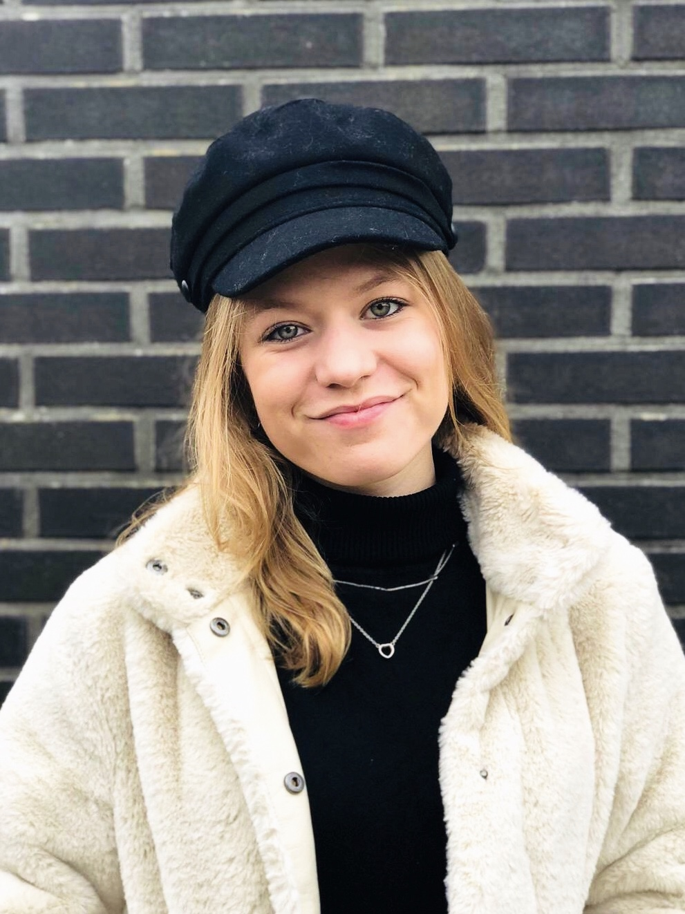

Ik ben Xabyne en ik studeer Communication & Multimedia Design op de Haagse Hogeschool. Op dit moment zit ik in mijn tweede jaar. Ik houd van sporten, afspreken met vrienden, series kijken en het luisteren naar muziek.Verder vind ik het heel leuk om ontwerpen te maken. Ik vind het een uitdaging om iets te creëren om het leven van mensen gemakkelijker te maken. Ook vind ik het leuk om iets mysterieus te ontwerpen.
Mijn verwachting van dit vak is dat ik ga leren hoe ik een interactief concept ga maken. Ik neem aan dat dit vak een sterke focus legt op de technologie. Ik denk dat ik veel zal leren over verschillende technologieën, zoals wearables, playful interfaces, augmented en virtual reality en artificial creatures. Ik denk dat ik in de lab weken vooral zal leren hoe ik zoiets echt werkelijk in de praktijk kan maken.
Ik wil graag leren over de mogelijkheden van de techniek en hoe ik een gedetailleerd concept kan maken. Ook wil ik weten wat de mogelijkheden van wearables, playful interfaces, augmented en virtual reality en artificial creatures zijn. Verder wil ik graag leren hoe ik de Arduino-kit gebruik. Ik kan niet wachten om een concept te maken dat op zo veel technologie gebasseerd is. Dit vind ik interessant, omdat ik het moeilijk vind om zelf iets technisch te maken. Het lijkt me een enorme uitdaging.